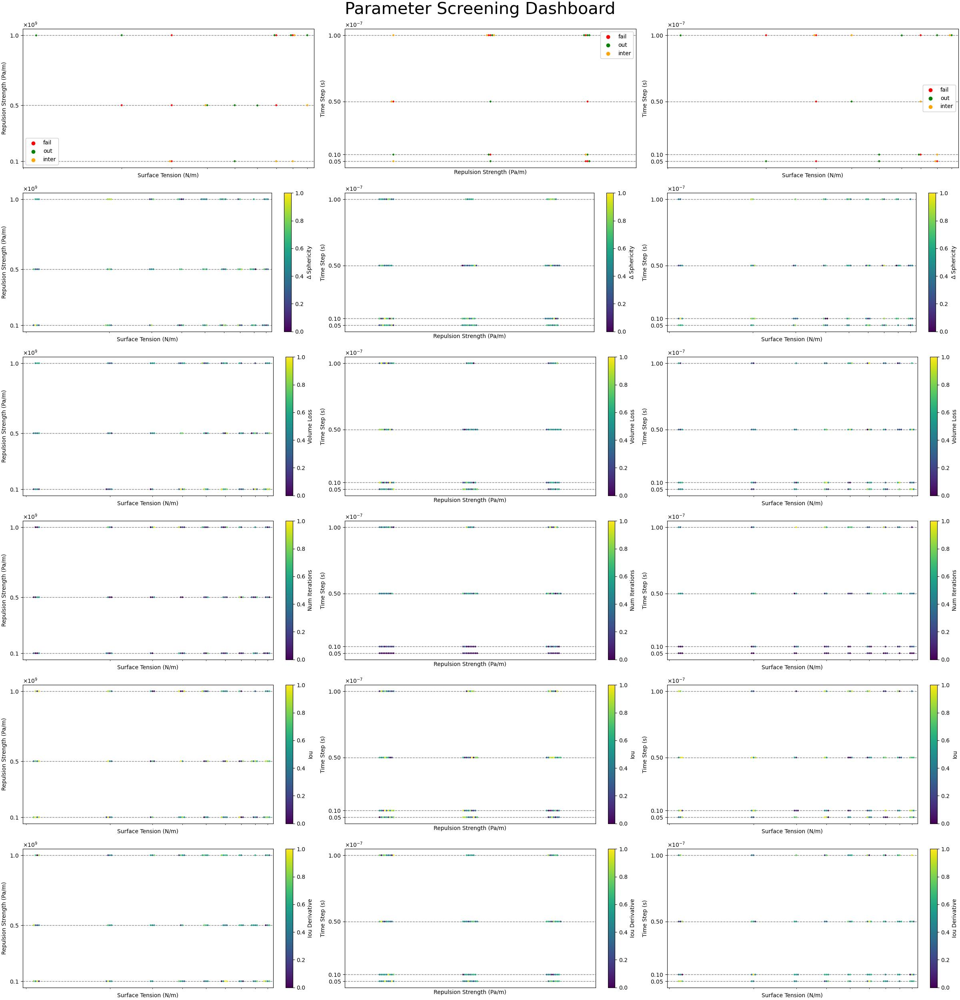

How to collect data from screening and create a Dashboard#
CONTENT#
A quick overview on the directory content to simplify surfing across files:
screening_analysis/
| |-- additional/
| ...
| |-- misc/
| ...
| |-- test_data/
| ...
| |-- utils/
| ...
additional: additional scripts for further analysis on the screening outputsmisc: JSON files needed for the dashboardtest_data: synthetic test datasets and script to generate themutils: files for mesh manipulation and feature computation
INTRODUCTION:#
Interpreting the results obtained from screening a large number of parameter combinations may be difficult and extremely time consuming. In order to simplify this process I wrote some python code that automatically extract some metrics from the different simulation runs in the screening, and outputs some summary plots (a dashboard) from it.
The metrics reported in the dashboard are the following:
Δ-sphericity: the difference in sphericity between final and initial geometries.
% Volume loss: the relative volume loss between final and initial geometries [(final - init) / init] expressed as a percentage.
Num iterations: the number of iterations performed in the simulation time window (i.e., tot simulation time / sampling period).
Mean(1 - IoU): the mean value for the reciprocal of the IoU computed on every cell between final and initial geometries (actually it is an average over the values for initial geometry vs. last 10 geometries, if available).
Mean(1 - IoU) Derivative: the mean of the derivatives of the last 10 available values of Mean(1 - IoU), useful to check if simulations have reached convergence.
The produced dashboard can be of 3 types, depending on the number of screening parameters:
One screening parameter: the dashboard is composed of one plot for each of the desired metrics; The plot has the screening parameter values on the x-axis, and the correspondent metric values on the y-axis.
Two screening parameters: the dashboard is composed of one plot for each of the desired metrics; The plot has the screening parameters values on the x-axis and y-axis, while the correspondent metric values are reported with different dot colouring.
More than two screening parameters: similar to the case for 2 screening parameters, but the scatter plot is replaced with a swarmplot.
The dashboard reports also the simulation runs that have failed, the ones in which we found interpenetration among cells, and the one that presents outlying values for any of the metrics (meaning that something went wrong…) with different markers.
EXAMPLES:#

Dashboard for one single screening parameter |

Dashboard for a pair of screening parameters |
 Dashboard for more than two screening parameters |
HOW TO:#
To get the dashboard you first need to compute/extract the desired metrics from the screening outputs. For this you need to do the following:
Run
scripts/parameter_screening/collect_screening_data.pyto gather the results in a compactsummary_folder.On Euler, run
run_data_collection.pyto extract metrics from the simulation outputs folders. For this you may need to have a look to the final part of the script (afterif __name__ == "__main__":), and specify the path to the input and output folder for your case. The required input paths are the one tosimulation_outputsdirectory and thecsvfile insidesummary_folderdirectory. Notice that the outputs are saved into files atoutput_dir/dashboard_files.Once all the data have been successfully collected, transfer them locally from Euler and run
screening_dashboard.py. To do so you need to specify:indicators, the metrics that you want to load and include in your dashboard (the only mandatory one isinterpenetration, which is needed to mark runs with interpenetrating cells).parameters, the screening parameters that you want to include in your dashboard (put first the one you prefer to have on the x-axis).axes_scales, the axes scales associated to the screening parameters (to be chosen among ‘linear’, ‘log’, ‘discrete’).root_dir, the path to the screening output directory.screening_csv_file_name, the name of the .csv file of the table used to set up the screening.
NOTES#
In the case of more than two screening parameters, if the number of values for a certain parameters is too large (e.g. 15), visualization in the swarmplot can be difficult (and also warnings might be raised).
Due to lack of space, ticks on x-axis for the swarmplot were omitted.
In addition to the files for the dashboard,
run_data_collection.pyprovides as output also plots of evolution of IoU between consecutive iterations and with respect to the initial geometry.If some (1 - IoU) values are missing from the dashboard it is due to the fact that the number of iterations available was to low to compute enough value of the metric (indeed, for computational reason it is IoU is computed every 5 iterations. Hence, if the value is not reported, it means that there were less than 5 iterations availbale).
SIMPLIFIED DASHBOARD FOR ANALYSIS OF MECHANICAL PROPERTIES#
Once found the working parameter ranges, it is time to screen for surface_tension and adherence_strength to find the optimal range for these mechanical parameters.
To analyze this screening I implemented this simplified version of the dashboard.

Simplified Dashboard for mechanical properties |
The code you need to run is mech_props_analysis.py. Check the __main__ section for the required inputs.
ADDITIONAL MATERIAL#
The directory contains also additional material that can be useful for the screening analysis. In particular:
check_vtk_empty.py: it may happen that during simulations on cluster some of the.vtkfiles that records the iterations are empty due to saving mistakes. This script allows to get a list of the empty files.check_sphericity.py: to check the evolution of cell sphericity over simulation iterations.check_volume.py: to check the evolution of cell volumes over simulation iterations to monitor volume loss.copy_from_euler.py: to copy.vtkfiles for different simulation runs and iterations automatically.